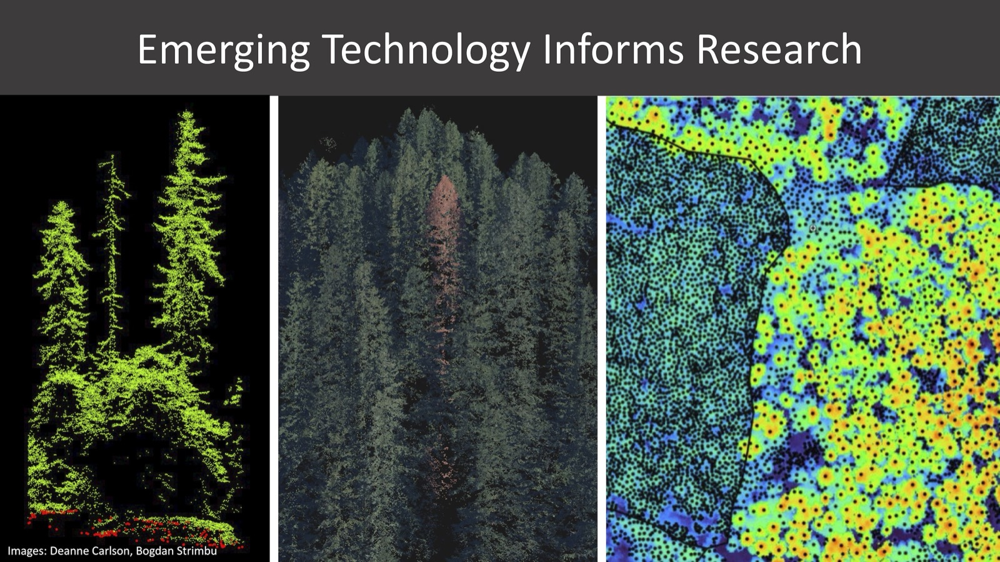

Courses
Hands-on training in the quantitative and computational methods reshaping modern wildlife ecology and conservation science.
The Levi Lab develops openly available course materials that help ecologists adopt the tools transforming the field — from deep learning for images and audio to AI-assisted statistical analysis.
Applications of Artificial Intelligence in Ecology
Camera traps, autonomous recording units, and other passive sensors now generate datasets so large that no field biologist can manually process them. This course teaches practical AI applications for wildlife biologists — combining deep learning for images and audio with AI-assisted coding to process large datasets and conduct defensible analyses more efficiently.
Five days of morning lectures and afternoon laboratory exercises (11 labs in total) build directly toward a student-selected final project that applies the techniques to a real ecological research question. All lectures, labs, tutorials, code, and datasets are openly available.

Statistical Modeling for Ecology and Conservation
A five-day intensive pre-fall workshop covering probability, distributions, generalized linear models, mixed models, model selection, maximum likelihood, and Bayesian hierarchical modeling — taught with R, JAGS, and Nimble.
Designed for ecology and conservation professionals seeking practical quantitative training. Problem sets come in multiple thematic versions — including forest and aquatic systems — so students can work through each method on data closest to their own research.